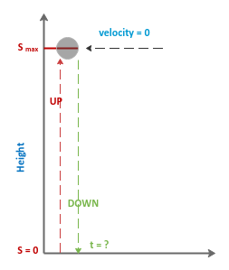
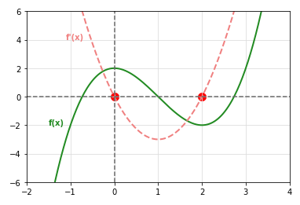

| PolarSPARC |
Introduction to Calculus - Part 3
| Bhaskar S | 03/20/2021 |
Differential Calculus
In Part 2, we introduced the concept of Differentiation using Limits and explored the basic rules of differentiation.
More Rules of Differentiation
The following are some more rules of Differentiation:
The Product Rule
If f(x) and g(x) are any differentiable functions at x, then \(\Large{\frac{d}{dx}}\)[f(x).g(x)] = \(f(x).\Large{\frac{d}{dx}}\)[g(x)] + \(g(x).\Large{\frac{d}{dx}}\)[f(x)]
The Quotient Rule
If f(x) and g(x) are any differentiable functions at x, then \(\Large{\frac{d}{dx}}[\frac{f(x)}{g(x)}]\) = \(\Large{\frac{g(x).\frac{d}{dx}[f(x)] - f(x).\frac{d}{dx}[g(x)]}{[g(x)]^2}}\)
The Chain Rule
If g(x) ia s differentiable function at x and f(u) ia s differentiable function at g(x), then \(\Large{\frac{d}{dx}}\)[f(g(x))] = \(\Large{\frac{d}{dx}}\)[f(g(x))].\(\Large{\frac{d}{dx}}\)[g(x)]
In other words, if u = g(x) and y = f(u), then \(\Large{\frac{dy}{dx}}\) = \(\Large{\frac{dy}{du}}\).\(\Large{\frac{du}{dx}}\)
As an example for better intuition - if a person burns 45 calories by walking 1 mile (45 calories/mile) and that same person walks 5 miles in 1 hour (5 miles/hour), then how do we find the rate of calories/hour ? The answer: 45 calories/mile . 5 miles/hour = 45 . 5 calories/hour = 225 calories/hour.
We will now solve a few example(s) in the following sections.
| Example-1 | A dynamite blast propels a heavy rock straight up with a launch velocity of 160 ft/sec. It reaches a height of \(s = 160t - 16t^2\) after t secs. (a) How far does the rock go up ? (b) When does the rock hit the ground ? |
|---|---|
|
The following is the illustration shows the rock propelled up to a maximum height \(s_{max}\):

Fig.1
(a) Given the distance \(s = 160t - 16t^2\), the rock at the maximum height \(s_{max}\) will have a velocity of zero (0). Velocity v = \(\Large{\frac{ds}{dt}}\) = \(\Large{\frac{d}{dt}}\)\([160t - 16t^2]\) = \(160 - 32t\) = 0 That is \(32t = 160\) or t = 5. RESULT: the rock reaches maximum height at t = 5, \(s_{max} = 160(5) - 16(5)^2\) = 400 ft. (b) The rock will hit the ground when s = 0. That is s = \(160t - t^2 = 0\) or \(16t^2 = 160t\) or t = 10. RESULT: the rock will hit the ground when t = 10 secs. |
|
| Example-2 | Find the derivative \(\Large{\frac{dy}{dx}}\) of y = \((x + 1)\sqrt{x}\) |
|---|---|
|
Given y = \((x + 1)\sqrt{x}\), we can use the product rule to find the derivative \(\Large{\frac{dy}{dx}}\). \(\Large{\frac{dy}{dx}}\) = \((x + 1).\Large{\frac{d}{dx}}\)\([\sqrt{x}]\) + \(\sqrt{x}.\Large{\frac{d}{dx}}\)[x + 1] \(\Large{\frac{dy}{dx}}\) = \((x + 1).\Large{\frac{d}{dx}}\)\([x^{\frac{1}{2}}]\) + \(\sqrt{x}.\Large{\frac{d}{dx}}\)[x + 1] \(\Large{\frac{dy}{dx}}\) = \((x + 1).\Large{\frac{1}{2}}\)\((x^{\frac{1}{2}-1})\) + \(\sqrt{x}\) = \(\Large{\frac{x + 1}{2\sqrt{x}}}\) + \(\sqrt{x}\) = \(\Large{\frac{x + 1}{2\sqrt{x}}}\) + \(\Large{\frac{2x}{2\sqrt{x}}}\) RESULT: the derivative \(\Large{\frac{dy}{dx}}\) of y = \((x + 1)\sqrt{x}\) = \(\Large{\frac{3x + 1}{2\sqrt{x}}}\). |
|
| Example-3 | Find the derivative \(\Large{\frac{dy}{dx}}\) of y = \(\Large{\frac{2x^2 - 4x + 3}{2 - 3x}}\) |
|---|---|
|
Given y = \(\Large{\frac{2x^2 - 4x + 3}{2 - 3x}}\), we can use the quotient rule to find the derivative \(\Large{\frac{dy}{dx}}\). \(\Large{\frac{dy}{dx}}\) = \(\Large{\frac{(2 - 3x).\frac{d}{dx}[2x^2 - 4x + 3] - (2x^2 - 4x + 3).\frac{d}{dx}[2 - 3x]}{(2 -3x)^2}}\) \(\Large{\frac{dy}{dx}}\) = \(\Large{\frac{[(2 - 3x).(4x - 4)] - [(2x^2 - 4x + 3).(-3)]}{(2 -3x)^2}}\) \(\Large{\frac{dy}{dx}}\) = \(\Large{\frac{(8x - 12x^2 -8 + 12x) - (-6x^2 + 12x - 9)}{(2 -3x)^2}}\) \(\Large{\frac{dy}{dx}}\) = \(\Large{\frac{8x - 12x^2 -8 + 12x + 6x^2 - 12x + 9}{(2 -3x)^2}}\) RESULT: the derivative \(\Large{\frac{dy}{dx}}\) of y = \(\Large{\frac{2x^2 - 4x + 3}{2 - 3x}}\) = \(\Large{\frac{-6x^2 + 8x + 1}{(2 -3x)^2}}\). |
|
| Example-4 | Find the derivative \(\Large{\frac{dy}{dx}}\) of y = \(\sqrt{4 - x^2}\) |
|---|---|
|
Given y = \(\sqrt{4 - x^2}\), we can use the chain rule to find the derivative \(\Large{\frac{dy}{dx}}\). Let u = \(4 - x^2\) so that y = \(\sqrt{u}\) \(\Large{\frac{dy}{dx}}\) = \(\Large{\frac{dy}{du}.\frac{du}{dx}}\) = \(\Large{\frac{d}{du}}\)\([\sqrt{u}]\).\(\Large{\frac{d}{dx}}\)\([4 - x^2]\) \(\Large{\frac{dy}{dx}}\) = \(\Large{\frac{d}{du}}\)\(u^{\frac{1}{2}}\).\(\Large{\frac{d}{dx}}\)\([4 - x^2]\) \(\Large{\frac{dy}{dx}}\) = \(\Large{\frac{1}{2}}\)\(u^{\frac{1}{2}-1}\).(-2x) \(\Large{\frac{dy}{dx}}\) = \(\Large{\frac{1}{2}}\).\(\frac{1}{\sqrt{u}}\).(-2x) \(\Large{\frac{dy}{dx}}\) = \(\Large{-\frac{x}{\sqrt{u}}}\) RESULT: the derivative \(\Large{\frac{dy}{dx}}\) of y = \(\sqrt{4 - x^2}\) = \(\Large{-\frac{x}{\sqrt{(4 - x^2)}}}\). |
|
| Example-5 | Find the derivative \(\Large{\frac{dy}{dx}}\) of y = \(\Large{(\frac{3x - 1}{x^2 + 3})^2}\) |
|---|---|
|
Given y = \(\Large{(\frac{3x - 1}{x^2 + 3})^2}\), we can use the chain rule to find the derivative \(\Large{\frac{dy}{dx}}\). Let u = \(\Large{\frac{3x - 1}{x^2 + 3}}\) so that y = \(u^2\) \(\Large{\frac{dy}{dx}}\) = \(\Large{\frac{dy}{du}.\frac{du}{dx}}\) = \(\Large{\frac{d}{du}}\)\([u^2]\).\(\Large{\frac{d}{dx}}\)\(\Large{[\frac{3x - 1}{x^2 + 3}]}\) \(\Large{\frac{dy}{dx}}\) = \(2u\).\(\Large{\frac{(x^2 + 3)(3) - (3x - 1)(2x)}{(x^2 + 3)^2}}\) \(\Large{\frac{dy}{dx}}\) = \(2.\Large{\frac{(3x - 1)}{(x^2 + 3)}}\).\(\Large{\frac{(3x^2 + 9 - 6x^2 + 2x)}{(x^2 + 3)^2}}\) RESULT: the derivative \(\Large{\frac{dy}{dx}}\) of y = \(\Large{(\frac{3x - 1}{x^2 + 3})^2}\) = \(\Large{\frac{2(3x - 1)(-3x^2 + 2x + 9)}{(x^2 + 3)^3}}\). |
|
| Example-6 | A snowball melts such that the volume decreases at a rate of \(1 cm^3/min\). At what rate is the diameter of the snowball decreasing when the diameter is 5 cm ? |
|---|---|
|
A snowball is in the shape of a sphere and its volume \(v = \Large{\frac{4}{3}}\)\(\pi{r}^3\). We also know that \(r = \Large{\frac{d}{2}}\), where r is the radius and d is the diameter. Therefore, \(v = \Large{\frac{4}{3}}\)\(\pi{\Large{(\frac{d}{2}})}^3\) = \(\Large{\frac{\pi{d}^3}{6}}\) Given the snowball volume DECREASES at a rate of \(1 cm^3/min\). In other words, \(\Large{\frac{dv}{dt}}\) = -1 The rate of change of volume w.r.t diameter \(\Large{\frac{dv}{dd}}\) = \(\Large{\frac{d}{dd}[\frac{\pi{d}^3}{6}]}\) = \(\Large{\frac{\pi{d}^2}{2}}\) Using the chain rule, we can write \(\Large{\frac{dv}{dt}}\) = \(\Large{\frac{dv}{dd}}\).\(\Large{\frac{dd}{dt}}\). -1 = \(\Large{\frac{\pi{d}^2}{2}}\).\(\Large{\frac{dd}{dt}}\) Therefore, \(\Large{\frac{dd}{dt}}\) = \(-\Large{\frac{2}{\pi{d}^2}}\) RESULT: the rate at which the diameter is decreasing at d = 5 is \(-\Large{\frac{2}{25\pi}}\). |
|
Higher Order Derivatives
Given a function \(y = f(x)\), we learnt the first derivative is denoted as \(y' = f'(x)\) = \(\Large{\frac{d}{dx}}\)\([f(x)]\).
\(y'\) (or \(f'(x)\)) is basically the rate of change of y with respect to x at any point x. For example, the rate of change of distance (S) with respect to time (t) = \(\Large{\frac{dS}{dt}}\) is the Velocity.
Taking the derivative of the first derivative function, denoted by \(y'' = f''(x)\) = \(\Large{\frac{d}{dx}}\)\([f'(x)]\) is the Second Derivative. It is the rate of change of the first derivative function with respect to x. For example, the rate of change of velocity (V) with respect to time (t) is the Acceleration.
The second derivative \(y'' = f''(x)\) is also mathematically represented as \(\Large{\frac{d^2}{dx^2}}\)\([f(x)]\).
The following are the mathematical notations for upto the \(5^{th}\) degree of derivative of the function f(x):
1st Derivative
\(y' = f'(x)\) = \(\Large{\frac{d}{dx}}\)\([f(x)]\)
2nd Derivative
\(y'' = f''(x)\) = \(\Large{\frac{d^2}{dx^2}}\)\([f(x)]\)
3rd Derivative
\(y''' = f'''(x)\) = \(\Large{\frac{d^3}{dx^3}}\)\([f(x)]\)
4th Derivative
\(y^{(4)} = f^{(4)}(x)\) = \(\Large{\frac{d^4}{dx^4}}\)\([f(x)]\)
5th Derivative
\(y^{(5)} = f^{(5)}(x)\) = \(\Large{\frac{d^5}{dx^5}}\)\([f(x)]\)
Let us look at an example now.
| Example-7 | Find the first, second, and third derivatives for the function y = \(\Large{\frac{1}{x}}\) |
|---|---|
|
First derivative \(y'\) = \(\Large{\frac{d}{dx}}[\frac{1}{x}]\) = \(\Large{\frac{d}{dx}}\)\([x^{-1}]\) = \((-1)[x^{-1-1}]\) = \(-x^{-2}\) = \(-\Large{\frac{1}{x^2}}\) Second derivative \(y''\) = \(\Large{\frac{d}{dx}}\)\([y']\) = \(\Large{\frac{d}{dx}}\)\([-x^{-2}]\) = \(-(-2)[x^{-2-1}]\) = \(2x^{-3}\) = \(\Large{\frac{2}{x^3}}\) Third derivative \(y'''\) = \(\Large{\frac{d}{dx}}\)\([y''']\) = \(\Large{\frac{d}{dx}}\)\([2x^{-3}]\) = \(2(-3)[x^{-3-1}]\) = \(-6x^{-4}\) = \(-\Large{\frac{6}{x^4}}\) |
|
Increasing and Decreasing Functions
A function f(x) is said to be Decreasing in the interval (a, b) if the slope of the function is negative, meaning \(f'(x)\) < 0, for all x in the interval (a, b).
A function f(x) is said to be Increasing in the interval (a, b) if the slope of the function is positive, meaning \(f'(x)\) > 0, for all x in the interval (a, b).
A function f(x) is said to be Constant in the interval (a, b) if the slope of the function is zero, meaning \(f'(x)\) = 0, for all x in the interval (a, b).
The following is the illustration of a decreasing, constant, and increasing function:
The slope of the function is negative in the interval \((-\infty, a)\), is constant in the interval (a, b), and is positive in the interval \((b, \infty)\).
Critcal Numbers
From the graph for f(x) above, we observe (and confirm using the derivative \(f'(x)\)) that the function f(x) is decreasing in the interval \((-\infty, a)\) and increasing in the interval \((b, \infty)\).
Now, assume we were given a function f(x) and asked to determine these intervals. How do we proceed ???
We proceed by knowing the fact that f(x) is a continuous function and \(f'(x)\) changes sign only at x value(s) for which the derivative \(f'(x) = 0\) or for x values for which \(f'(x)\) is undefined. These x values are referred to as the Critical Numbers of the function f(x).
In other words, if the function f(x) is defined at x = c, then c is a critical number of f(x) if either \(f'(c) = 0\) or \(f'(c)\) is undefined.
Let us look at an example now.
| Example-8 | Determine the intervals where the function \(f(x) = x^3 - 3x^2 + 2\) is decreasing and is increasing | ||||||||
|---|---|---|---|---|---|---|---|---|---|
|
To determine where a function is decreasing, constant, or increasing, we first need to determine its derivative. \(f'(x)\) = \(\Large{\frac{d}{dx}}\)\([x^3 - 3x^2 + 2]\) = \(3x^2 - 6x\) = \(3x(x - 2)\) We can infer \(f'(x)\) is continuous at all points and is zero (0) at two points: x = 0 and x = 2. These are the critical numbers of the given function f(x). The following graph is the illustration of the functions f(x) (in green) and \(f'(x)\) (in red) with the critical numbers as red dots:

Fig.3
The critical numbers of the function f(x) partition the domain of the function f(x) into intervals \((-\infty, 0)\), (0, 2), and \((2, \infty)\) respectively. Now it is time to find the sign of the derivative function \(f'(x)\) in each of the 3 domain intervals by picking a test number in each of the domain intervals.
RESULT: The function f(x) is increasing in the interval \((-\infty, 0)\), decreasing in the interval (0, 2), and again increasing in the interval \((2, \infty)\). |
|||||||||
References